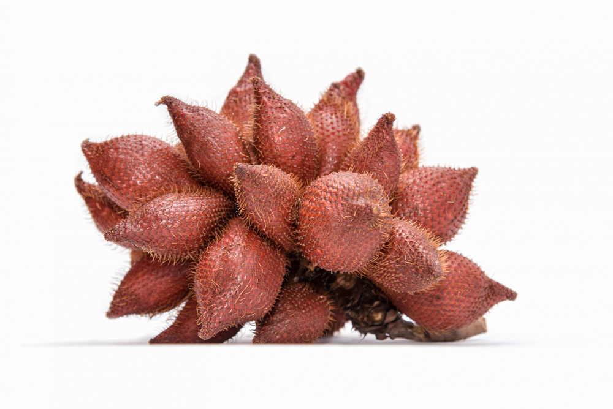

Laman ini dibuat sebagai media pemasaran online UMKM di wilayah Sumberrejo, agar produk UMKM setempat dapat dikenal lebih luas.
© KKN Tempel 2022.
Penulis >> Admin
Salacca zalacca atau dikenal dengan buah salak merupakan buah tropis yang juga menjadi buah asli Indonesia. Salak awalnya ditemukan tumbuh liar di alam di Jawa bagian barat daya dan Sumatra bagian selatan (Aninsi, 2021).
Di Yogyakarta sendiri, buah salak banyak ditemukan. Namun masih banyak yang belum memanfaatkannya menjadi olahan yang diminati. Apa saja olahan yang bisa dibuat dengan bahan dasar salak?
Menurut wikipedia, keripik salak merupakan keripik hasil olahan dari buah salak yang digoreng dengan cara khusus, biasanya menggunakan mesin penggoreng hampa. Hal ini dilakukan agar tidak merusak buah saat digoreng.
Jika menggunakan cara penggorengan yang biasa yakni dengan menggunakan kuali atau wajan saja, maka buah salak tidak akan menjadi keripik karena buah akan rusak terkena suhu panas yang berlebih.
Manisan salak merupakan salah satu olahan dari buah salak yang tergolong enak dan menyegarkan. Cara pembuatannya pun dapat dibilang sangat mudah yaitu dengan beberapa bahan berikut:
Salak pondoh.
Caba rawit dan cabai keriting.
Perasan jeruk lemon.
Kayu manis.
Garam.
Gula pasir.
Kapur sirih.
Air secukupnya.
1 batang daun kemangi.
Tahukah Anda bahwa jenang salak asal Jombang sudah menembus pasar luar negeri sebagai oleh-oleh? Menurut Gimo Hadiwibowo dalam artikel yang dimuat di Koranmemo Jenang Salak asal Jombang ini menembus pasar Hongkong, Taiwan dan Singapura.
Untuk mengolah salak menjadi jenang memang perlu waktu yang cukup lama terutama pada proses pengadukan yang dapat memakan waktu 8 jam tanpa henti.
Dikutip dari Kompas.com, geplak merupakan salah satu makanan khas Yogyakarta yang banyak di toko oleh-oleh maupun toko tradisional. Rasa kudapan ini tergolong manis karena terbuat dari parutan kelapa dan gula.
Sebagai inovasi, Anda juga bisa memvariasikan rasa geplak yang awalnya hanya manis dari gula saja dengan penambahan bahan salak. Dengan begitu makanan khas geplak menjadi punya varian rasa salak, sehingga pemanfaatan buah salak yang cukup melimpah menjadi lebih menarik.
Pernah mendengar Cake Salak? Yap, kudapan yang berupa kue salak ini bisa menjadi inovasi dalam pengolahan buah salak supaya lebih menarik. Berlimpahnya buah salak di Indonesia mubadzir rasanya jika tidak memvariasikan pengolahan salak dalam kudapan kue.
Nah, itulah beberapa ide olahan buah salak yang mungkin bisa Anda coba praktekan dan mencoba mengambil peluang bisnis olahan salak. Semoga dapat bermanfaat dan terima kasih.
Laman ini dibuat sebagai media pemasaran online UMKM di wilayah Sumberrejo, agar produk UMKM setempat dapat dikenal lebih luas.
© KKN Tempel 2022.